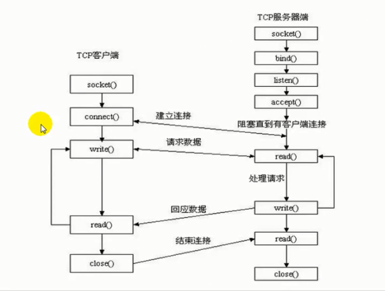
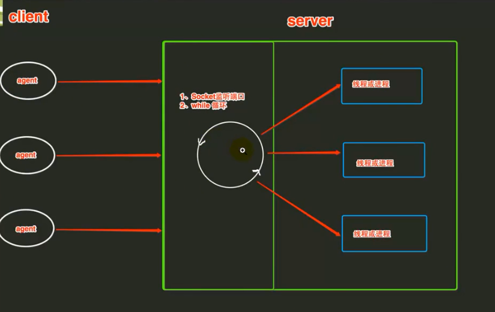

Python 提供了两个基本的 socket 模块。
第一个是 Socket，它提供了标准的 BSD Sockets API。
第二个是 SocketServer， 它提供了服务器中心类，可以简化网络服务器的开发。
1、Scoket类型
套接字格式：
socket(family,type[,protocal]) 使用给定的地址族、套接字类型、协议编号（默认为0）来创建套接字。
1.1、socket.AF_UNIX #只能够用于单一的Unix系统进程间通信
1.2、socket.AF_INET #服务器之间网络通信
1.3、socket.AF_INET6 #IPv6
1.4、socket.SOCK_STREAM #流式socket , for TCP
1.5、socket.SOCK_DGRAM #数据报式socket , for UDP
1.6、socket.SOCK_RAW #原始套接字，普通的套接字无法处理ICMP、IGMP等网络报文，而SOCK_RAW可以；其次，SOCK_RAW也可以处理特殊的IPv4报文；此外，利用原始套接字，可以通过IP_HDRINCL套接字选项由用户构造IP头。
1.7、socket.SOCK_SEQPACKET #可靠的连续数据包服务
1.8、创建TCP Socket： s=socket.socket(socket.AF_INET,socket.SOCK_STREAM)
1.9、创建UDP Socket： s=socket.socket(socket.AF_INET,socket.SOCK_DGRAM)
2、Socket 函数
注意点:
1）TCP发送数据时，已建立好TCP连接，所以不需要指定地址。UDP是面向无连接的，每次发送要指定是发给谁。
2）服务端与客户端不能直接发送列表，元组，字典。需要字符串化repr(data)。
2.1、服务端socket函数
s.bind(address) #将套接字绑定到地址, 在AF_INET下,以元组（host,port）的形式表示地址.
s.listen(backlog) #开始监听TCP传入连接。backlog指定在拒绝连接之前，操作系统可以挂起的最大连接数量。该值至少为1，大部分应用程序设为5就可以了。
s.accept() #接受TCP连接并返回（conn,address）,其中conn是新的套接字对象，可以用来接收和发送数据。address是连接客户端的地址。
2.2、客户端socket函数
s.connect(address) #连接到address处的套接字。一般address的格式为元组（hostname,port），如果连接出错，返回socket.error错误。
s.connect_ex(adddress) #功能与connect(address)相同，但是成功返回0，失败返回errno的值。
2.3、公共socket函数
s.recv(bufsize[,flag]) #接受TCP套接字的数据。数据以字符串形式返回，bufsize指定要接收的最大数据量。flag提供有关消息的其他信息，通常可以忽略。
s.send(string[,flag]) #发送TCP数据。将string中的数据发送到连接的套接字。返回值是要发送的字节数量，该数量可能小于string的字节大小。
s.sendall(string[,flag]) #完整发送TCP数据。将string中的数据发送到连接的套接字，但在返回之前会尝试发送所有数据。成功返回None，失败则抛出异常。
s.recvfrom(bufsize[.flag]) #接受UDP套接字的数据。与recv()类似，但返回值是（data,address）。其中data是包含接收数据的字符串，address是发送数据的套接字地址。
s.sendto(string[,flag],address) #发送UDP数据。将数据发送到套接字，address是形式为（ipaddr，port）的元组，指定远程地址。返回值是发送的字节数。
s.close() #关闭套接字。
s.getpeername() #返回连接套接字的远程地址。返回值通常是元组（ipaddr,port）。
s.getsockname() #返回套接字自己的地址。通常是一个元组(ipaddr,port)
s.setsockopt(level,optname,value) #设置给定套接字选项的值。
s.getsockopt(level,optname[.buflen]) #返回套接字选项的值。
s.settimeout(timeout) #设置套接字操作的超时期，timeout是一个浮点数，单位是秒。值为None表示没有超时期。一般，超时期应该在刚创建套接字时设置，因为它们可能用于连接的操作（如connect()）
s.gettimeout() #返回当前超时期的值，单位是秒，如果没有设置超时期，则返回None。
s.fileno() #返回套接字的文件描述符。
s.setblocking(flag) #如果flag为0，则将套接字设为非阻塞模式，否则将套接字设为阻塞模式（默认值）。非阻塞模式下，如果调用recv()没有发现任何数据，或send()调用无法立即发送数据，那么将引起socket.error异常。
s.makefile() #创建一个与该套接字相关连的文件
3、socket编程思路

3.1、TCP服务端：
1 创建套接字，绑定套接字到本地IP与端口
# socket.socket(socket.AF_INET,socket.SOCK_STREAM) , s.bind()
2 开始监听连接 #s.listen()
3 进入循环，不断接受客户端的连接请求 #s.accept()
4 然后接收传来的数据，并发送给对方数据 #s.recv() , s.sendall()
5 传输完毕后，关闭套接字 #s.close()
3.2、TCP客户端:
1 创建套接字，连接远端地址
# socket.socket(socket.AF_INET,socket.SOCK_STREAM) , s.connect()
2 连接后发送数据和接收数据 # s.sendall(), s.recv()
3 传输完毕后，关闭套接字 #s.close()
4、模拟聊天机器人实例
4.1、socket_server.py 服务端
#!/usr/bin/env python
# -*- coding:utf-8 -*-
"""
Socket服务器端
"""
import socket
sk = socket.socket()
sk.bind(('127.0.0.1', 8080,))
sk.listen(5)
#接收客户端请求
#连接，客户端地址信息
while True:
conn, address = sk.accept() #accept()阻塞
conn.sendall(bytes('欢迎致电10086', encoding='utf-8'))
while True:
ret_byte = conn.recv(1024)
ret_str = str(ret_byte, encoding='utf-8')
if ret_str == 'q':
break
conn.sendall(bytes('工号10086回复您：' + ret_str, encoding='utf-8'))
4.2、socket_client.py 客户端
#!/usr/bin/env python
# -*- coding:utf-8 -*-
"""
socket客户端
"""
import socket
ck = socket.socket()
ck.connect(('127.0.0.1', 8080))
ret_byte = ck.recv(1024)
ret_str = str(ret_byte, encoding='utf-8')
print(ret_str)
while True:
inp = input("请输入内容，按q退出 \n >>>")
if inp == 'q':
ck.sendall(bytes(inp, encoding='utf-8'))
break
else:
ck.sendall(bytes(inp, encoding='utf-8'))
ret_str = str(ck.recv(1024), encoding='utf-8')
print(ret_str)
ck.close()
5、基于socket实现文件上传实例
5.1、ftp_server.py
#!/usr/bin/env python
# -*- coding:utf-8 -*-
"""
模拟发送文件的服务器端
"""
import socket
sk = socket.socket()
sk.bind(('127.0.0.1', 8080,)) #绑定套接字到本地IP与端口
sk.listen(5) #开始监听连接
#接收客户端请求
#连接，客户端地址信息
while True:
conn, address = sk.accept() # accept()阻塞
conn.sendall(bytes('欢迎访问我的ftp', encoding='utf-8'))
#先接收文件大小，然后再接收文件
ret_size = str(conn.recv(1024), encoding='utf-8')
conn.sendall(bytes('start', encoding='utf-8')) #给客户端发送一个确认信息，通知客户端开始发送文件，解决数据粘包的问题。
total_size = int(ret_size) #文件总大小
has_recv = 0 #已经接收的文件大小
f = open('new.png', 'wb')
#接收文件内容，直到获取完成
while True:
if total_size == has_recv:
break
data = conn.recv(1024)
f.write(data)
has_recv += len(data)
f.close()
5.2、ftp_client.py
#!/usr/bin/env python
# -*- coding:utf-8 -*-
"""
模拟发送文件的客户端
"""
import socket
import os
ck = socket.socket()
ck.connect(('127.0.0.1', 8080))
ret_byte = ck.recv(1024) #接收服务器端返回的字节数据
ret_str = str(ret_byte, encoding='utf-8') #将字节数据转换成字符串
print(ret_str)
#首先向服务器发送文件的大小
file_size = os.stat('file1.png').st_size
ck.sendall(bytes(str(file_size), encoding='utf-8'))
ck.recv(1024) #接收一下服务器端的确认信息，再开始发送文件，解决数据粘包引起的系统异常问题
#发送文件
with open('file1.png', 'rb') as f:
for line in f:
ck.sendall(line)
ck.close()
6、socketserver模块实现并发操作

使用：
1、创建类，必须继承socketserver.BaseRequestHandler
2、定义handle方法
3、server_forever
socketserver模块实现并发操作实例：
#!/usr/bin/env python
# -*- coding:utf-8 -*-
"""
socketserver模块实现并发操作
"""
import socketserver
class MyServer(socketserver.BaseRequestHandler):
def handle(self):
#self.request, self.client_address, self.server
conn = self.request
conn.sendall(bytes('欢迎致电10086', encoding='utf-8'))
while True:
ret_byte = conn.recv(1024)
ret_str = str(ret_byte, encoding='utf-8')
if ret_str == 'q':
break
conn.sendall(bytes('工号10086回复您：' + ret_str, encoding='utf-8'))
if __name__ == '__main__':
server = socketserver.ThreadingTCPServer(('127.0.0.1', 8080), MyServer)
server.serve_forever()